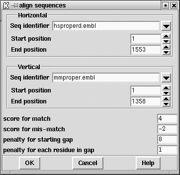

This function will produce an optimal global alignment of two segments of the sequence. The dynamic programming alignment algorithm is based on Huang,X On global sequence alignment. CABIOS 10 227-235 (1994). There is no length limit of the sequences but the sequences to be aligned should be of the same type i.e. both be DNA or both protein.

A dialogue box (shown above) requests the horizontal and vertical sequences and the ranges over which they are to be aligned ( see section Selecting a sequence) and the gap start penalty and the gap extension penalty. In addition, if the sequence is DNA, the "score for match" and "score for mis-match" must be provided. These values are used to generate a score matrix. For protein sequences, the score matrix can be changed from the "Options" menu ( see section Changing the score matrix).
The alignment is displayed in the Output Window along with the percentage mismatch (see below) and on the SPIN Sequence Comparison Plot as a line. The line represents the path of the alignment.
The following plot shows a global alignment of two Xenopus Laevis sequences. The vertical sequence (xlactcag) is genomic DNA, and the horizontal sequence (xlacacr) is the corresponding cDNA. The vertical sections of the plotted path correspond to introns in the genomic DNA, which are obviously absent from the cDNA.
Below we show a typical alignment (from a different pair of sequences)
as produced in the Output Window.
The two aligned sequences are automatically saved in memory and can be
accessed through the sequence manager. They are assigned default filenames
which are based on the parent with the addition of _a"number" where "number" is
a unique identifier (see the twelth and thirteenth entries of the sequence
manager picture (
see section Sequence manager).
Further operations available for align sequences are:
![[picture]](spin_align_p,5.31667in.png.html)
(Click for full size image)
Percentage mismatch 29.6
1 11 21 31 41 51
hsproperd gagcctatcaacccagataaagcgggacctcctctctggtagaggtgcagggggcagtac
mmproper ************************************************************
-157 -147 -137 -127 -117 -107
61 71 81 91 101 111
hsproperd tcaacatgatcacagagggagcgcaggcccctcgattgttgctgccgccgctgctcctgc
mmproper ************************************************************
-97 -87 -77 -67 -57 -47
121 131 141 151 161 171
hsproperd tgctcaccctgccagccacaggctcagaccccgtgctctgcttcacccagtatgaagaat
:: :::::::::::::: :: :
mmproper **************************************tgtttcacccagtatgaggagt
-37 -27 -17 -7 3 13
181 191 201 211 221 231
hsproperd cctccggcaagtgcaagggcctcctggggggtggtgtcagcgtggaagactgctgtctca
:::: :::: :::::: ::::: :: ::: : : :::: :: ::::::::::::::::
mmproper cctctggcaggtgcaaaggcctacttgggagagacatcagggtagaagactgctgtctca
23 33 43 53 63 73
horizontal PERSONAL: m13mp18.seq from 1 to 7250
vertical PERSONAL: lawrist7.seq from 1 to 5261
Last generated on 25 April 2016.